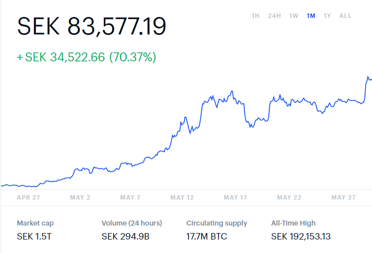

TASK
Internets Historia
Syfte
Uppgiften går ut på att besvara frågor om internets historia, dess påverkan på ett valt område och dess funktionalitet.
Läs det här:
Den här uppgiften behandlar kunskap och förståelse om "webbens historia, betydelse och funktionalitet.". Indelningen är gjord i tre delar (historia, samhällspåverkan och tekniker).
Det är möjligt att det blir lättare att göra uppgiften med den uppdelning som finns eller så kan du slå ihop dessa delar om du anser att det blir enklare att skriva om det du väljer.
Du behöver inte besvara alla de frågor som uppgiften ställer men om ni avviker/avstår från någon specifik frågeställning så får ni motivera avsaknaden med annan information som är
relevant för att visa er förståelse.
Centrala innehåll:
• Webben som plattform, dess historia och samhällspåverkan.
FRÅGESTÄLLNING
Nedan följer ett antal frågeställningar som skall besvaras i så god mån som möjligt. (Totalt minst 500 ord)
Exempel på tekniker:
• Telefonkatalog
• BitCoin
• P2P
• Torrents
• Streaming
• Dataspel (Datorspel, TV-spel)
• Skolplattformar
• Lexikon
• Ordböcker
• Tidningar
• Sociala medier
• Datorer
• Telefoner
------------------------------------------------------------------------------------------------------------------------------------------------------------------------------------------------------
Internets Historia
Välj ut en tjänst eller en mjukvara som har kommit till just på grund av internet
eller som har blivit påverkad av internets utveckling. Du skall om ditt valda område
skriva en kort
beskrivning innehållande följande punkter;
• Varför valde du att skriva om just den här tjänsten/mjukvaran?
• Dess användningsområde?
• Hur har tjänsten/mjukvaran hittills påverkats av internet?
• Vilka hot/möjligheter finns det för en vidare utveckling?
Svar:
Jag valde Kryptovaluta för att det såg intressant ut och man använder det för att göra transaktioner på nätet. När den kom till påverkade inte det mycket men under dem senaste åren har
det exploderat upp ganska mycket. Då började alla att dekryptera hash för att få bitcoin, kryptering betyder att man skriver något i hemligt språk enligt Rudebeck, L. 2014. Svensk
skolordlista. Fjärde upplagan. Stockholm: Svenska Akademien, svenska språknämnden och Norstedts. Ett hot för det är att ifall det ska bli olagligt som det blev i Argentina vilket gör
så att värdet sänktes vilket gör så att alla försökte sälja sina bitcoin som de hade så marknaden kraschade.
Samhällspåverkan
------------------------------------------------------------------------------------------------------------------------------------------------------------------------------------------------------
Vilken påverkan har mjukvaran/tjänsten du valt på samhället du lever i och globalt? Har den bidragit med något stort eller är den mestadels okänd? Vad hade hänt om tjänsten/mjukvaran
försvunnit imorgon? Hade samhället påverkats mycket eller lite? Hade någon konkurrent tagit över eller hade det behövts utvecklats något bättre från grunden?
Finns det något man borde gjort annorlunda mot hur den fungerar idag om den behövde införas på nytt? Beskriv också hur din vardag hade sett ut om tjänsten/mjukvaran inte fanns och vad
du istället använt dig av.
Svar:
I det samhället jag lever i påverkar inte kryptovalutor mycket mer än att folk vet att det finns och att man önskade att man köpte det när det var värt 10kr. Men globalt har det
påverkat så mycket så att vissa länder har förbjudit det så att man inte får äga det vilket var det största hotet för det. Ifall att bitcoin skulle försvinna imorgon kommer de som hade
vara ledsna eller arga för att de har förlorat pengar. Men annars kommer det inte hända mycket med världen runt omkring för att det inte är många som har det. Bitcoin är det mest värda
kryptovaluta som ligger på 4000$
------------------------------------------------------------------------------------------------------------------------------------------------------------------------------------------------------
Funktionalitet
Hur fungerar denna tjänst/mjukvara rent tekniskt över Internet? Givetvis skall ni ange vart ni hittat information som ni anser vara fakta. Annars så antas alla påståenden vara en åsikt
och är därmed inte ansedda som trovärdig information. Viss fakta är svår att hitta exempel på. Om det är så att ni inte hittar någon skriven källa till ert påstående så får ni lägga
fram logiska argument med praktiska exempel som bevisar att ni vet vad ni pratar om.
Svar:
Kryptovalutor fungerar som riktiga valutor förutom att de kan gå från att vara värda tusentals kronor till några hundra lappar. (se bilden från https://www.coinbase.com/price/bitcoin)

-----------------------------------------------------------------------------------------------------------------------------------------------------------------------------------------------------
Kunskaper och förmågor:
Kunskaper om webbens historia, betydelse och funktionalitet.
Betygskriterier:
E: Eleven beskriver översiktligt webbens historia och dess påverkan på samhället och
de grundläggande tekniker som webben bygger på. Eleven använder med viss säkerhet
terminologi inom området.
C: Eleven beskriver utförligt webbens historia och dess påverkan på samhället och de
grundläggande tekniker som webben bygger på. Eleven använder med viss säkerhet
terminologi inom
området.
A: Eleven beskriver utförligt och nyanserat webbens historia och dess påverkan på
samhället och de grundläggande tekniker som webben bygger på. Eleven använder med
säkerhet
terminologi inom området.
REEEE